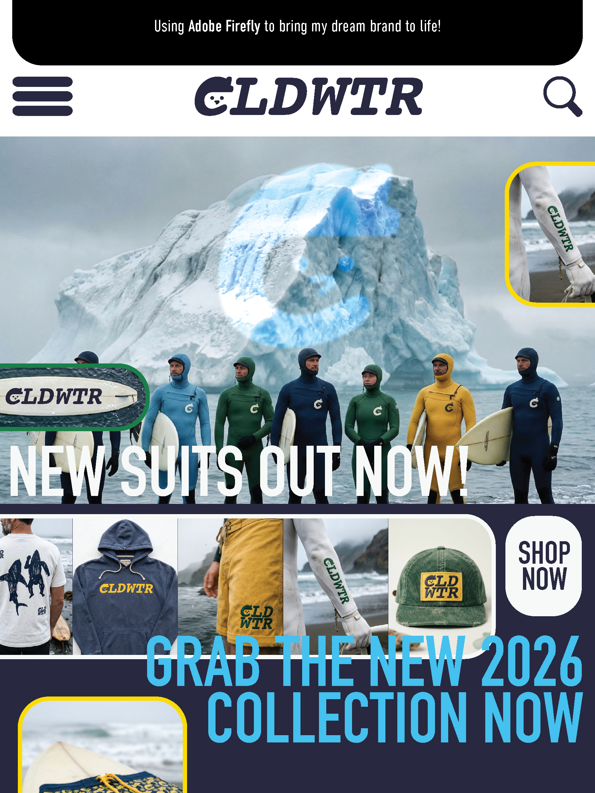
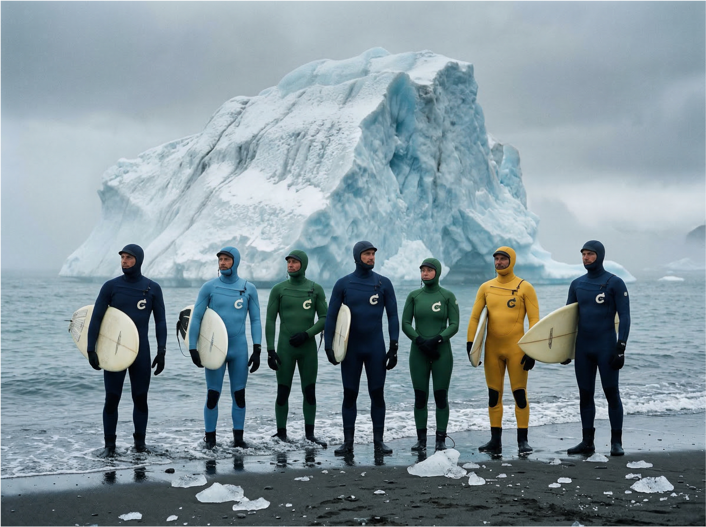
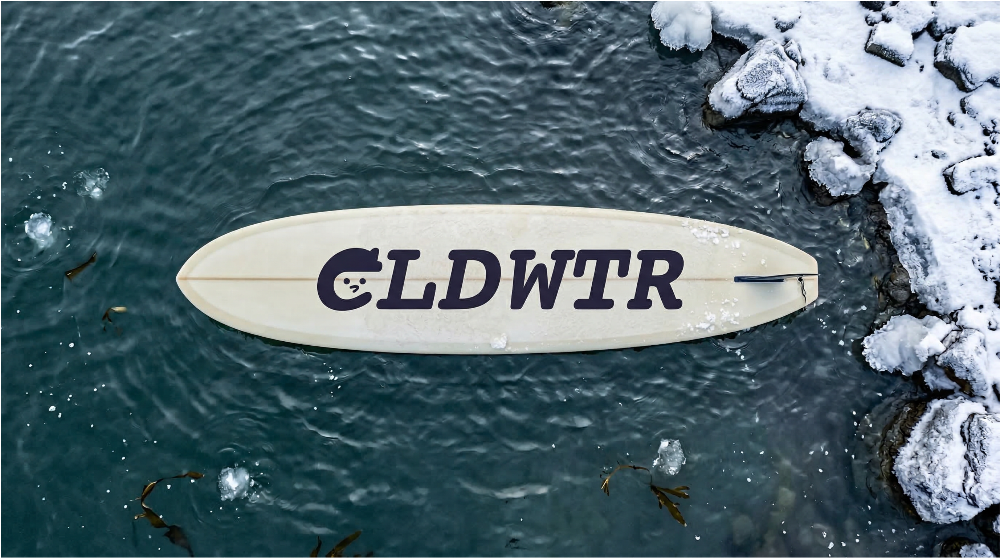
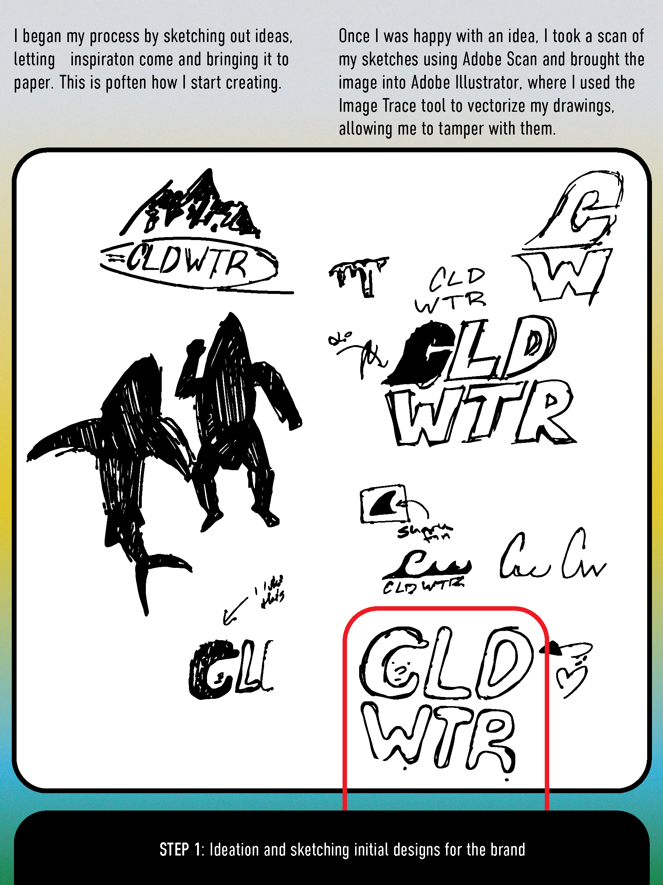
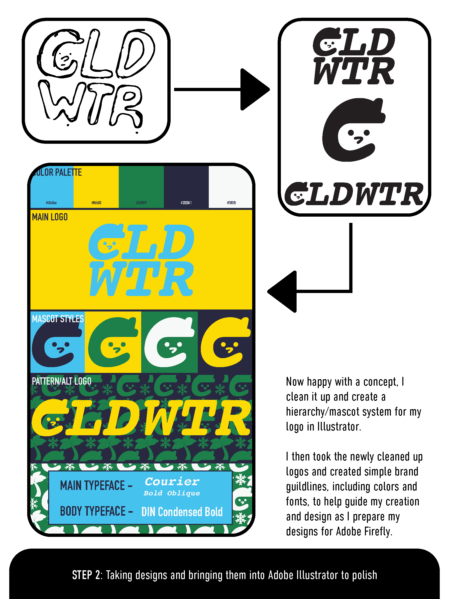
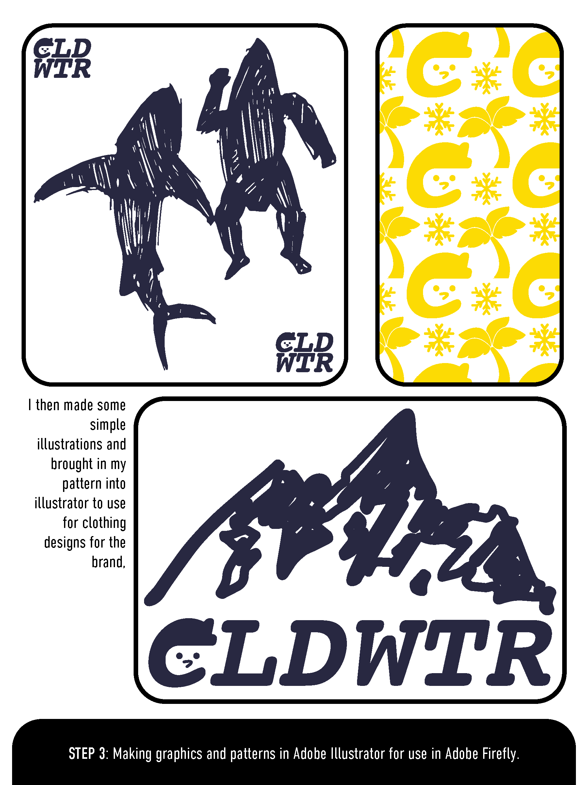
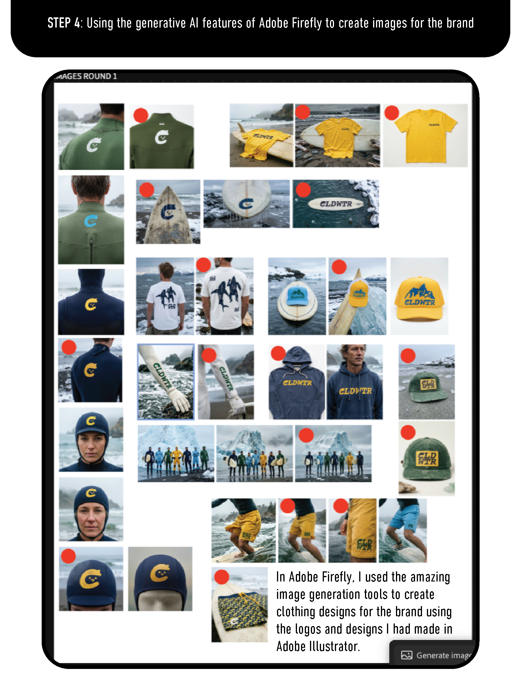
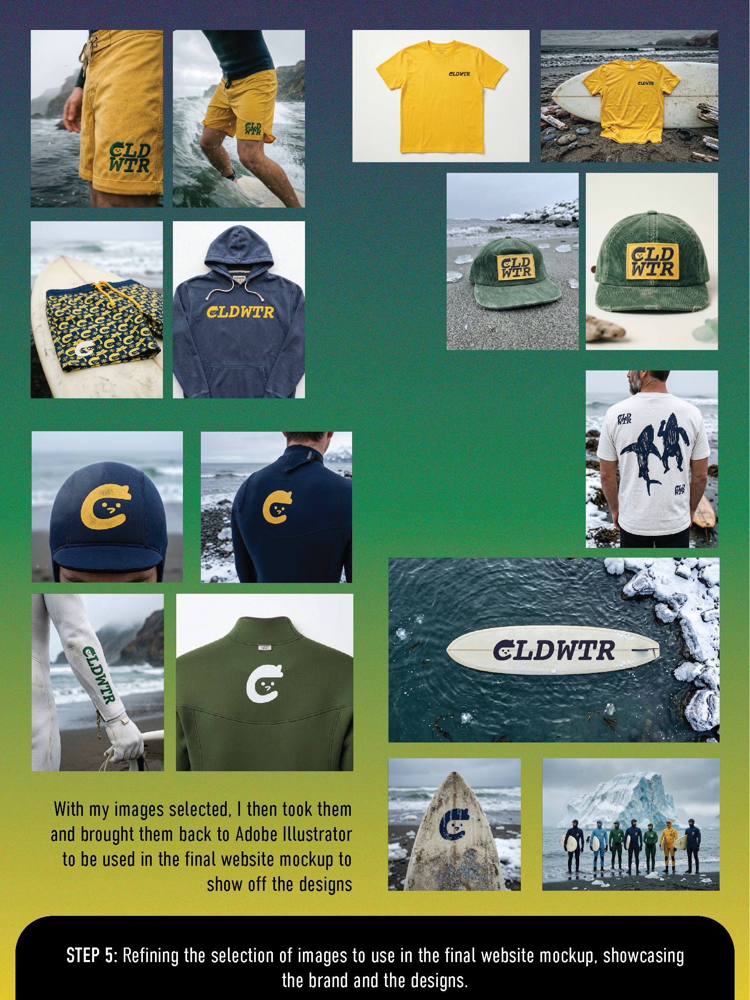

Commissioned by Adobe to show off their new features on Adobe Firefly Boards, especially their generative AI tools. Working hand-in-hand with the Adobe Suite, I created a mockup wetsuit brand inspired by the origins of the wetsuit itself: the cold waters of the Pacific Northwest.







From loose drawings in my sketchbook to finalized product mockups, working in partnership with all the Adobe tools helped streamline my process and led to me being able to create a whole new brand from the comfort of my desk.